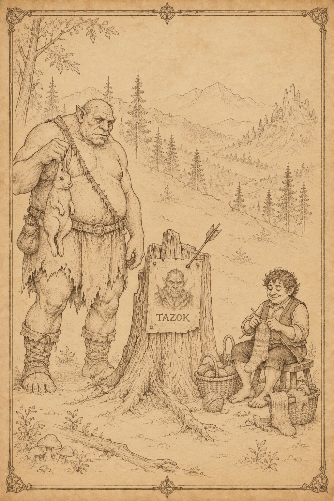
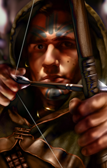
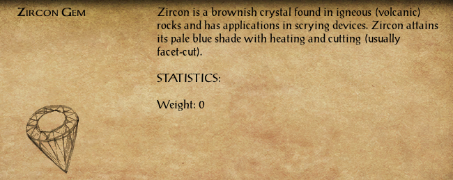
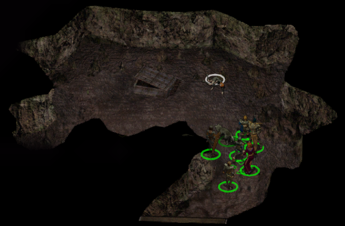
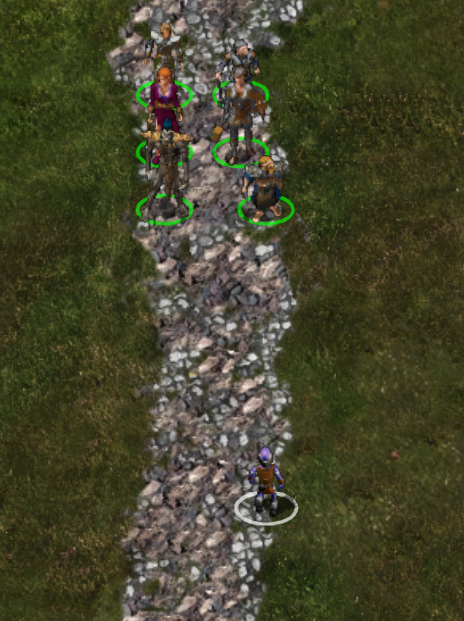
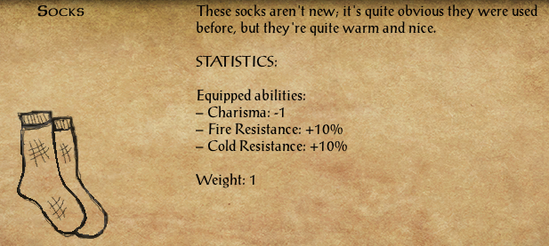

Po dotarciu do Wysokiego Żywopłotu 2 drużyna przedstawiła Thalantyrowi gadającego kurczaka. Mag natychmiast rozpoznał w nim Melicampa, choć stanowczo zaprzeczył, jakoby niefortunny czarodziej nadal był jego uczniem. Okazało się, że młodzieniec nie tyle studiował magię, ile podkradał mistrzowi wiedzę, składniki i magiczne przedmioty, po czym majstrował przy zaklęciach zdecydowanie przekraczających jego umiejętności. Źródłem przemiany były skradzione, przeklęte karwasze. Melicamp próbował przyspieszyć ich działanie własnymi modyfikacjami i skończył jako drób. Thalantyr nie mógł po prostu odwrócić zaklęcia, ponieważ klątwa miała zbyt niestabilną naturę. Do rytuału potrzebował czaszki nieumarłego stworzenia, która miała dostarczyć niezbędnego pierwiastka śmierci. Uprzedził przy tym uczciwie, że eksperyment może uratować ucznia albo zabić wszystkich uczestników. Magia najwyraźniej nie uznawała ani gwarancji, ani zwrotów.
Szczęśliwie drużyna miała przy sobie czaszkę zabraną po jednej z wcześniejszych walk ze szkieletami. Rytuał zakończył się pomyślnie i Melicamp odzyskał własne ciało, zachowując komplet kończyn i tracąc większość pierza. Uradowany młodzieniec rzucił się Sandrah na szyję i pocałował ją w podzięce. Kapłanka odwzajemniła uścisk, lecz ostrzegła dawnego znajomego, że nie zamierza ponownie ratować go przed skutkami kolejnego nieprzemyślanego eksperymentu (Melicamp the Chicken). Reputacja +1
Na tym sprawa nie dobiegła końca. Przeklęte karwasze zniknęły i mogły trafić w ręce kolejnego nieszczęśnika. Thalantyr poprosił Leecha o pomoc w ich odnalezieniu i zniszczeniu. Aby ustalić położenie przedmiotu, należało zbudować magiczne urządzenie wspomagające wróżenie. Czarodziej przekazał więc Melicampowi wiadomość dla Taeroma Fuiruima z Beregostu, który miał przygotować mechaniczną część konstrukcji. Do jej ukończenia potrzebne były również kamienie szlachetne. Najlepiej nadawały się czarne perły, cenione przy tworzeniu narzędzi jasnowidzenia, lecz inne odpowiednio dobrane klejnoty mogły dodatkowo wzmocnić skuteczność urządzenia. Pozostawało ustalić, które kamienie będą użyteczne, zebrać materiały i odnaleźć karwasze, zanim ich klątwa spadnie na kolejną ofiarę (Destroy the Cursed Bracers).
Po wyjściu z pustelni maga wśród drzew 5 drużyna natknęła się na samotnego elfa. Kivan początkowo odniósł się do przybyszów z wyraźną rezerwą, dziwiąc się, co mieszkańcy miast robią tak daleko od cywilizacji. Gdy jednak usłyszał, że kompania również poluje na bandytów nękających okolicę, dostrzegł niezwykły zbieg interesów. Elf od wielu miesięcy tropił tę samą grupę, kierowany osobistą zemstą. Jej przywódca, półogr Tazok, odebrał życie komuś bardzo mu bliskiemu. Wspólny wróg okazał się wystarczającym powodem do współpracy, dlatego łucznik zaproponował połączenie sił. Leech chętnie przystał na tę propozycję. Doświadczony tropiciel mógł znacznie przyspieszyć odnalezienie bandytów, a dla Kivana wspólna wyprawa stanowiła kolejną szansę na dopadnięcie Tazoka i jego ludzi (Kivan and Tazok).

Kivan
Elf · Łucznik · Chaotyczny Dobry
Kivan pochodził z lasów Shilmisty, choć od dawna nie nazywał już tego miejsca swoim domem. Od lat przemierzał Wybrzeże Mieczy, kierowany jednym celem, który stopniowo przerodził się w obsesję: zemstą. Dawno temu podróżował wraz ze swoją ukochaną Deherianą, gdy oboje wpadli w zasadzkę bandytów dowodzonych przez półogra Tazoka. Schwytani i poddani okrutnym torturom, zostali rozdzieleni przez los. Kivan zdołał ujść z życiem, lecz Deheriana nie miała tyle szczęścia. Od tamtej pory elf poświęcił się pościgowi za odpowiedzialnymi za jej śmierć, nie pozwalając sobie na spokój ani zapomnienie. Małomówny i zdystansowany, rzadko dopuszcza innych do siebie, a nowe znajomości traktuje z ostrożnością. Leech szybko odniósł wrażenie, że Kivan nie zazna prawdziwej ulgi, dopóki nie dopadnie tych, którzy odebrali mu ukochaną.
Przyjęcie nowego towarzysza oznaczało konieczność ponownego uporządkowania składu drużyny. Neera zgodziła się tymczasowo wrócić do Pomocnej Dłoni i oczekiwać tam na dalsze wieści.
Pozostawieni NPC: Neera (Pomocna Dłoń)
Pierwsza dłuższa rozmowa między Kivanem a Jen’lig szybko zeszła na temat utraty bliskich oraz różnic dzielących elfy i githyanki. Łucznik bez wahania przyznał, że napędza go nienawiść podsycana śmiercią Deheriany. Astralna wojowniczka wyjaśniła natomiast, że w kulturze jej ludu romantyczna miłość nie odgrywa takiej roli jak wśród elfów. Najwyższymi wartościami pozostają lojalność wobec królowej, własnej rasy oraz powierzonego obowiązku. Kivan nie potrafił zaakceptować tego spojrzenia. Uważał, że zdolność do miłości odróżnia rozumne istoty od bezmyślnych bestii, dlatego zaczął postrzegać Jen’lig jako osobę pozbawioną czegoś fundamentalnie ważnego. Przybyszka z Planu Astralnego przyjęła tę ocenę z właściwą sobie cierpką dumą. Mimo wzajemnych uszczypliwości rozmowa zeszła później na bardziej przyziemne sprawy. Elf zauważył, że choć githyanki jest oczytana i inteligentna, nie wygląda na osobę szczególnie przyzwyczajoną do tropienia zwierzyny, wielodniowych marszów i spania pod gołym niebem. Leech przypomniał wtedy żartobliwie, że drużyna podróżuje skromnie nie ze względu na umiłowanie dzikiej przyrody, lecz głównie z braku pieniędzy. Na zakończenie Kivan zdradził odrobinę swojej bardziej romantycznej natury. Wyraził nadzieję, że pewnego dnia jego towarzysze przestaną patrzeć wyłącznie pod nogi i dostrzegą także piękno gwiazd ponad nimi.
Podczas dalszej wędrówki Sandrah podzieliła się informacjami odnalezionymi w księdze poświęconej przeklętemu wampirycznemu ostrzu poszukiwanemu przez Torgiona. Broń została stworzona przez wampiry jako pułapka. Wysysała siły życiowe właściciela, uzależniała go od siebie i z czasem nieuchronnie prowadziła do jego zguby. Nie znali jeszcze obecnego miejsca spoczynku ostrza, ale zachowane wskazówki sugerowały, że należy go szukać w bardzo starych ruinach rozsianych po Wybrzeżu Mieczy. Był to trop mało precyzyjny, lecz przynajmniej zawężał poszukiwania do ruin, których na szlaku zaczynało pojawiać się podejrzanie wiele.
Rozmowa zeszła później na bardziej osobiste tematy. Sandrah wyjaśniła, że mimo związku z Mystrą wybrała drogę kapłanki i uzdrowicielki zamiast klasycznego szkolenia maga. Leech słuchał jej z autentycznym zainteresowaniem, a swobodne rozmowy coraz częściej przeplatały się z ostrożnym flirtem. Młoda kapłanka przyznała również, że z Imoen łączy ją wiele wspólnych cech, ale to właśnie różnice pozwalają im się wzajemnie uzupełniać. Podróż przestawała być wyłącznie wędrówką ku kolejnym zadaniom. Stawała się także okazją do zacieśniania więzi pomiędzy coraz bardziej różnorodnymi członkami kompanii.
Podczas kolejnej rozmowy Jen’lig zdradziła Leechowi więcej szczegółów na temat swojego ludu. Githyanki wywodzili się z rasy niewolników illithidów i od pokoleń prowadzili nieustanną wojnę zarówno z dawnymi ciemiężycielami, jak i z githzerai. Najważniejsze były dla nich obowiązek, wojskowa hierarchia oraz lojalność wobec królowej Vlaakith i własnej rasy. Tradycyjna rodzina miała niewielkie znaczenie, ponieważ młodzi githyanki wychowywali się wspólnie w wylęgarniach, a najsilniejsze więzi tworzyli poprzez służbę oraz wspólną walkę. Astralna wojowniczka przyznała również, że zbyt wybitni wojownicy często kończą jako ofiary samej Vlaakith, która pochłania ich dusze, aby wzmacniać własną potęgę. Niewiele powiedziała natomiast o swojej obecnej misji na Planie Materialnym. Dała jedynie do zrozumienia, że zadanie jest ważne dla całego jej ludu i nie może zostać porzucone. Leech coraz wyraźniej dostrzegał, że pod wojskową dyscypliną i brutalną bezpośredniością Jen’lig skrywa znacznie więcej, niż jest gotowa ujawnić. Nie naciskał. W kompanii i tak znajdowało się już wystarczająco wiele sekretów, by obdzielić nimi kilka gildii złodziei.
Nadszedł czas, aby opuścić Wysoki Żywopłot i ruszyć na południe od Beregostu.
Bestiariusz: gnoll, szkielet

Drużyna rszyła na południe, lecz spokojny marsz nie trwał długo. Na szlaku drogę zastąpiły dwa ogrillony 1. Przy ich ciałach znaleziono list od Roe, męża Mirianne. Z treści wynikało, że mężczyzna szczęśliwie dotarł do Amnu, czego nie można było powiedzieć o posłańcu niosącym wiadomość. List należało zwrócić zatroskanej żonie podczas kolejnej wizyty w Beregostcie (Mirriane's Husband).
Wśród rzeczy ogrillonów znajdował się także cyrkon. Kamień mógł zostać wykorzystany w urządzeniu namierzającym przeklęte karwasze. Do ukończenia kompletu pozostawało odnaleźć jeszcze dwa odpowiednie klejnoty (Destroy the Cursed Bracers).

Nieopodal jeziora z częściowo zatopionym domem, w niewielkiej dziupli starego drzewa 2, znaleziono klucz. Nie pasował do żadnego z posiadanych zamków, dlatego jego przeznaczenie pozostawało tajemnicą. Jak zwykle zagadka mogła okazać się początkiem przygody albo tylko zapowiedzią kolejnej skrzyni, której nikt nie będzie pamiętał za kilkanaście dni.
Już z oddali podróżnicy usłyszeli płacz dziecka 3. Na polanie odnaleźli małą Kessy, która zgubiła ukochanego królika. Pozostawało ustalić, co dziecko robiło samotnie pośród dziczy, ale najpierw wypadało odnaleźć zaginione zwierzątko (The Quest for Jumper).
Na trakcie kompania spotkała Buba Snikketa 4, miejscowego łowcę ostrzegającego przed ogrami kręcącymi się w pobliżu. Zapytany o kryzys żelaza odparł, że nie interesują go polityczne spory ani płonące karawany. Metal nie był mu potrzebny ani do polowania, ani do zabijania, a całą tę „ognistą kupę śmieci” najchętniej rzuciłby krukom. Przed odejściem Bub poradził jedynie trzymać broń w gotowości. Ogry były blisko, a w przeciwieństwie do wielkiej polityki znacznie łatwiej dawały się wyczuć.
Jego ostrzeżenie szybko się potwierdziło. Przy szlaku drużyna spotkała ogra imieniem Ugh 5, który ku zaskoczeniu wszystkich nie rzucił się do ataku. Olbrzym opiekował się królikiem poszukiwanym przez Kessy i nie zamierzał oddać nowego przyjaciela bez przekonującego powodu. Po spokojnej rozmowie udało się nakłonić Ugha do zwrócenia zwierzęcia. W zamian drużyna obiecała odnaleźć dla niego innego królika. Nie każdy ogr musiał być potworem, choć większość nadal pozostawała wystarczająco duża, aby nie sprawdzać tej teorii poprzez obrażanie ich matek.
Po powrocie do Kessy 3 zwrócono jej zwierzaka (The Quest for Jumper). Dziewczynka była przekonana, że drugiego takiego zwierzęcia nie ma na całym świecie. Dodała jednak, że jej ojciec sprzedaje króliki podczas jarmarku w Nashkel. Być może właśnie tam uda się znaleźć nowego towarzysza dla Ugha (A New Best Friend for Ugh).
Dalej drogę zastąpiło troje rycerzy Płonącej Pięści 6. Wzięli kompanię za poszukiwanych bandytów, lecz po krótkim wyjaśnieniu obyło się bez rozlewu krwi. Przy obecnej liczbie kontraktów na głowę Leecha każda rozmowa ze strażnikami zaczynała przypominać rzut monetą.
Na trakcie 7 pojawili się Tristan i Isolde, para łowców nagród dysponująca wyjątkowo dokładnym opisem wyglądu młodego gnoma. Po porównaniu włosów, oczu i pozostałych cech uznali, że odnaleźli właściwy cel. Nie zamierzali negocjować, ponieważ do odebrania nagrody wystarczała im sama głowa. Oboje potraktowali planowane morderstwo niemal jak romantyczną zabawę. Isolde zaproponowała ukochanemu wybór pierwszego lub ostatniego ciosu, a następnie uprzejmie poprosiła ofiarę, aby stała spokojnie podczas odcinania głowy. Leech nie zamierzał ułatwiać im pracy. Jeśli para pragnęła wspólnego zajęcia, otrzymała szybki kurs popełniania błędów we dwoje.
Przy ich ciałach znaleziono kolejny kontrakt, tym razem zawierający bardzo dokładny opis wychowanka Goriona. Dokument podpisano inicjałami „M.S.”. Tożsamość zleceniodawcy nadal pozostawała tajemnicą, lecz ktoś wyraźnie inwestował coraz więcej wysiłku w doprowadzenie młodego gnoma przed oblicze odpowiednich bogów.
Wędrowcy natknęli się później na kilka grup hobgoblinów. Jedna z nich 8 miała przy sobie buty Worn Whispers, o których wspominał Zhurlong. Złodziej mógł wreszcie odzyskać swoją własność, pod warunkiem że ponownie nie opróżni wcześniej cudzych kieszeni (Zhurlong's Missing Boots).
W pobliskiej jaskini 9 czaiło się stworzenie zupełnie nieznane większości drużyny. Dzięki wiedzy Jen’lig oraz przygotowanemu przez nią amuletowi udało się odeprzeć psioniczny atak i zabić przeciwnika. Astralna wojowniczka wyjaśniła, że był to jedynie pomniejszy łupieżca umysłów, już wcześniej znajdujący się na granicy śmierci. Sandrah zapytała, czy illithidzi są dawnymi panami i największymi wrogami githyanki. Poszukiwaczka utraconej relikwii potwierdziła, dodając, że stworzenie zapewne szukało pożywienia w mózgach ludzi lub bestii, a być może również miejsca do złożenia jaj. Psioniczne odgłosy potwora wywołały w umyśle Jen’lig obraz rannego elfa. Nie była pewna, czy illithid próbował się porozumieć, czy przejąć kontrolę nad Leechem, jak mieli w zwyczaju jego pobratymcy. Githyanki przysięgła chronić dowódcę przed łupieżcami umysłów nawet za cenę własnego życia. Młody przywódca docenił jej lojalność, choć zdecydowanie wolałby nigdy nie wystawiać tej obietnicy na próbę.

Podczas nocnego odpoczynku Sandrah zagadnęła Kivana o elfi trans, zwany zadumą. Łucznik początkowo zakpił z niezręcznego wstępu, lecz szybko przyznał, że rozmowa odciągnęła go od bolesnych wspomnień. Kapłanka domyśliła się, że przeżywane przez niego wizje niewiele mają wspólnego ze spokojnymi marzeniami. Kivan opowiedział o Deherianie, miłości swojego życia, której śmierć popchnęła go ku zemście. Wierzył, że ukochana nie odeszła naprawdę, lecz oczekuje na niego w Arvandorze. Zanim będzie mógł do niej dołączyć, musi wypełnić przysięgę złożoną Shevarashowi i dokonać odwetu na odpowiedzialnych za jej śmierć. Służka Mystry zapewniła, że nie musi samotnie mierzyć się z żalem i pustką. Wspomniała człowieka, który przez całe jej dzieciństwo żył u boku wspomnienia własnej zmarłej ukochanej, dlatego dobrze rozumiała ciężar podobnej straty. Kivan docenił jej słowa i obiecał, że nie uzna już rozmów Sandrah za czczą gadaninę. Gdy kapłanka zasnęła, elf jeszcze długo siedział przy jej boku, pogrążony w ciszy oraz wspomnieniach.
Rankiem drużyna ruszyła dalej i wkrótce dotarła do Przełęczy Nashkel.
Bestiariusz: olbrzymi wąż, bełkotek, ghul, ogrillion, hobgoblin, goblin, łupieżca umysłu

Na polanie 1 drużyna odnalazła rozkładające się ciała podróżnych. Wśród ich rzeczy znajdował się naszyjnik z wygrawerowanym nazwiskiem Colquette. Najwyraźniej los zaginionej pary, o którą martwił się ojciec i mąż w Beregostcie, nie pozostawiał już wiele miejsca na nadzieję. Rodzinną pamiątkę należało zwrócić w zatroskane ręce (Colquette Family).
Podczas marszu Imoen żartobliwie oskarżyła Sandrah o zagarnianie dla siebie wszystkich interesujących mężczyzn, od przystojnych młodzieńców po rannych paladynów. Kapłanka odparła, że przyjaciółka powinna wreszcie zdecydować, czego właściwie chce, zamiast liczyć, że kandydaci będą cierpliwie ustawiali się w kolejce. Ostatecznie zawarły układ: następnym razem, gdy spotkają kogoś wartego uwagi, pierwszeństwo przypadnie Imoen. "Siostrzyczka" Leecha przyjęła propozycję, ale uprzedziła, że jeśli Sandrah spróbuje ją przechytrzyć, należy spodziewać się zemsty. Kapłanka przysięgła dotrzymać słowa. Jak długo przetrwa to porozumienie, miało się dopiero okazać.
Niedaleko szlaku mieszkał ekscentryczny pustelnik Portalbendarwinden 2, który przywitał intruzów żądaniem natychmiastowego opuszczenia jego terenu. Narzekał, że ludzie bez przerwy nachodzą go w poszukiwaniu odpowiedzi na pytania o naturę istnienia, choć równie dobrze mogliby otworzyć książkę i samodzielnie czegoś się nauczyć.
Tymczasem Sandrah i Imoen wznowiły przyjacielskie docinki dotyczące ich umowy. Pustelnik uznał obie za bardziej niepokojące niż własne dziwactwa i poradził Leechowi, aby nie pozostawiał ich bez nadzoru. Młody przywódca spróbował wydobyć z ekscentryka jakąś rzeczywistą wiedzę, lecz otrzymał jedynie absurdalne porady dotyczące rodzynek, królików, płonących wąsów oraz drewnianych majtek. Jego cierpliwość w końcu pękła. Oświadczył, że ma już dość zagadek, kryzysów, napuszonych półgłówków i ludzi nieustannie wystawiających jego nerwy na próbę. Zażądał prostej odpowiedzi, grożąc w przeciwnym razie użyciem ciężkiego argumentu rozmiarów kapelusza Elminstera.
Groźba przyniosła niespodziewany efekt. Portalbendarwinden spoważniał i wyznał, że aura Leecha jest wyjątkowo niestabilna, jak gdyby młody gnom pozostawał w konflikcie z samym sobą. Przeczuwał, że życie wychowanka Goriona potoczy się niezwykle długo, a czekające go walki będą miały zarówno fizyczny, jak i nieziemski charakter. Nie potrafił jednak przewidzieć wyniku. Los bohatera przypominał monetę stojącą na krawędzi, gotową w każdej chwili upaść na jedną ze stron. Pustelnik kazał im odejść, lecz jego ostatnie słowa pozostawiły więcej niepokoju niż wszystkie wcześniejsze brednie.
Nieco dalej drużynę minął Uguth 3, półork zmierzający do Wrót Baldura na spotkanie z ukochaną. Pozostawało życzyć mu szczęścia i drogi wolnej od nadgorliwych strażników, którzy mogli uznać romantyczną podróż za próbę napaści na miasto.
Na szlaku 4 kompanię zatrzymał wyjątkowo barwny jegomość przedstawiający się jako Lord Foreshadow. Arystokrata natychmiast pochwalił efektowny strój Leecha, uznając, że doskonale pasowałby do jednej z wystawnych zabaw kostiumowych organizowanych przez Lorda Ribaldiego. Zapewniał, że w takim odzieniu młody gnom stałby się głównym tematem rozmów całego przyjęcia. Zapytany o pochodzenie wyjaśnił, że przybył z Waterdeep, choć utrzymywał kontakty również z Neverwinter. Miasto Wspaniałości oferowało więcej luksusów odpowiadających jego wyrafinowanym gustom, lecz szczególnie przypadło mu do gustu nocne życie Neverwinter. Zamierzał nawet odwiedzić je ponownie w następnym roku.
Przed odejściem Lord Foreshadow wręczył Leechowi pierścień otrzymany od tajemniczego dobroczyńcy. Stwierdził, że młody podróżnik może wkrótce zakochać się w jednej ze swoich towarzyszek, a podarunek pomoże mu zdobyć jej serce. Nasz bohater przyjął prezent, choć nie był pewien, co bardziej powinno go niepokoić: anonimowy ofiarodawca czy fakt, że obcy arystokrata najwyraźniej wiedział o jego życiu uczuciowym więcej, niż wypadało.
Imoen natychmiast zapytała, czy podczas dalszych podróży mogliby odwiedzić Neverwinter. Leech nie chciał niczego obiecywać, lecz przyznał, że jeśli los okaże się łaskawy, ich droga może zaprowadzić także tak daleko na północ. Dziewczyna zaczęła już snuć plany wyprawy, gdy Sandrah poradziła jej najpierw zdobyć ciepłe, najlepiej różowe futro. Wbrew nazwie w Neverwinter potrafiło panować prawdziwie zimowe zimno, a samo miasto nie oferowało podobno wiele poza licznymi i niezwykle pobożnymi mieszkańcami. Ostrzeżenie skutecznie ostudziło zapał Imoen. Uznała, że skoro miasta nazywa się według tak przewrotnej zasady, znacznie rozsądniej będzie odwiedzić Last Haven. Miejsce o nazwie „Ostatnia Przystań” powinno przecież być idealne. Przynajmniej dopóki ktoś nie wyjaśni jej, że zapewne roi się tam od niebezpieczeństw.
Nashkel znajdowało się już blisko, lecz drużyna nadal miała kilka spraw do wyjaśnienia i przedmiotów do przekazania w Beregostcie. Postanowiono więc najpierw odwiedzić Ustronne Jezioro, a następnie wrócić do miasta na odpoczynek.
Bestiariusz: hobgoblin, goblin, ghul, bełkotek
Na szlaku drużyna odnalazła rannego Roomokuma, który padł ofiarą licznej bandy „małych, skaczących rozbójników”. Leech początkowo nie potrafił zrozumieć jego chaotycznych wyjaśnień, lecz podał mu chleb i wodę. Po odzyskaniu sił wędrowiec doprecyzował, że napastnikami były koboldy, znacznie liczniejsze i lepiej zorganizowane niż zwykle. Słyszał, jak stworzenia wspominały o jakimś planie oraz osobie wydającej im rozkazy. Wyglądało więc na to, że kolejny napad nie był dziełem przypadkowej bandy.
W podzięce za pomoc Roomokum wręczył Leechowi ciepłe skarpety. Młody gnom próbował odmówić nagrody, lecz uratowany wędrowiec uznał dar za „nienegocjowalny”. Pozostawało więc przyjąć skarpety i pogodzić się z faktem, że czasem ważne informacje wywiadowcze przychodzą w pakiecie z ochroną przed zmarzniętymi stopami.

